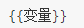
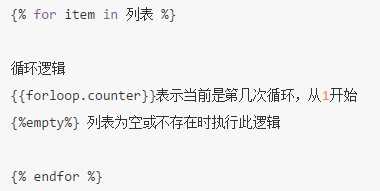
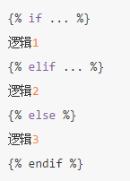
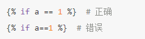
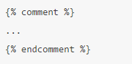

Django使用自带模板
1 配置
在工程中创建模板目录templates。
在settings.py配置文件中修改TEMPLATES配置项的DIRS值：
TEMPLATES = [
{
'BACKEND': 'django.template.backends.django.DjangoTemplates',
'DIRS': [os.path.join(BASE_DIR, 'templates')], # 此处修改
'APP_DIRS': True,
'OPTIONS': {
'context_processors': [
'django.template.context_processors.debug',
'django.template.context_processors.request',
'django.contrib.auth.context_processors.auth',
'django.contrib.messages.context_processors.messages',
],
},
},
]
2 定义模板
在templates目录中新建一个模板文件，如index.html
<!DOCTYPE html>
<html lang="en">
<head>
<meta charset="UTF-8">
<title>Title</title>
</head>
<body>
{{ city }}
</body>
</html>
3 模板渲染
调用模板分为两步骤：
找到模板 loader.get_template(模板文件在模板目录中的相对路径) -> 返回模板对象
渲染模板 模板对象.render(context=None, request=None) -> 返回渲染后的html文本字符串 context 为模板变量字典，默认值为None request 为请求对象，默认值为None
例如，定义一个视图
from django.http import HttpResponse
from django.template import loader
def index(request):
# 1.获取模板
template=loader.get_template('index.html')
context={'city': '北京'}
# 2.渲染模板
return HttpResponse(template.render(context))
Django提供了一个函数render可以简写上述代码。
render(request对象, 模板文件路径, 模板数据字典)
from django.shortcuts import render
def index(request):
context={'city': '北京'}
return render(request,'index.html',context)
4 模板语法
4.1 模板变量
变量名必须由字母、数字、下划线（不能以下划线开头）和点组成。
语法如下：

模板变量可以使python的内建类型，也可以是对象。
def index(request):
context = {
'city': '北京',
'adict': {
'name': '西游记',
'author': '吴承恩'
},
'alist': [1, 2, 3, 4, 5]
}
return render(request, 'index.html', context)

4.2 模板语句
1）for循环：

2）if条件：

比较运算符如下：
==
!=
<
>
<=
>=
布尔运算符如下：
and
or
not
注意：运算符左右两侧不能紧挨变量或常量，必须有空格。

4.3 注释
1）单行注释语法如下：

2）多行注释使用comment标签，语法如下：
